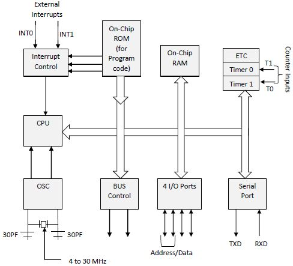

1. Explain the concepts of a microcontroller and a microprocessor, and specify eight key differences between them.
Definitions
A microcontroller is a compact integrated circuit designed to govern a specific operation in an embedded system. It typically includes a processor, memory, and input/output (I/O) peripherals on a single chip.
A microprocessor, on the other hand, is a more general-purpose processor that lacks onboard memory and I/O components, focusing primarily on computational tasks. It's the core part of a computer system or a computing device.
Key Differences
Here are eight key differences between microcontrollers and microprocessors:
- Integration: Microcontrollers integrate a processor, memory, and I/O peripherals on a single chip, whereas microprocessors typically contain only the CPU.
- Purpose: Microcontrollers are designed for specific control-oriented tasks in embedded systems, while microprocessors are intended for general-purpose computing.
- Memory and I/O: Microcontrollers come with built-in memory and I/O ports, but microprocessors need external components for these functions.
- Power Consumption: Microcontrollers are usually more power-efficient, making them ideal for battery-operated devices. Microprocessors, being more powerful, consume more power.
- Cost: Due to their integrated design, microcontrollers are generally cheaper and are used in cost-sensitive applications. Microprocessors, being more complex, are more expensive.
- Performance: Microprocessors offer higher computational power and speed, making them suitable for complex tasks like running an operating system. Microcontrollers, while less powerful, are efficient for dedicated tasks.
- System Complexity: Systems with microprocessors are more complex due to the need for additional components like RAM, ROM, and other peripherals.
- Application: Microcontrollers are commonly found in appliances, toys, and other small-scale systems. Microprocessors are the heart of PCs, laptops, and servers.
OR Key Differences (Table)
| Aspect | Microcontroller | Microprocessor |
|---|---|---|
| Integration | Includes processor, memory, and I/O on one chip. | Contains only the CPU; requires external memory and I/O. |
| Purpose | Designed for specific, control-oriented tasks. | Intended for general-purpose computing. |
| Memory and I/O | Has built-in memory and I/O ports. | Requires external components for memory and I/O. |
| Power Consumption | More power-efficient, suitable for battery-operated devices. | Higher power consumption. |
| Cost | Generally cheaper, used in cost-sensitive applications. | More expensive due to greater complexity. |
| Performance | Less powerful, efficient for dedicated tasks. | Higher computational power and speed. |
| System Complexity | Less complex system design. | More complex system due to additional components. |
| Application | Common in appliances, toys, and small systems. | Used in PCs, laptops, and servers. |
Assembly Language Implementation
The implementation methods in assembly language for microcontrollers and microprocessors vary due to their architecture and instruction sets. For instance, ARM assembly language is often used for microcontrollers with ARM processors.
; Example ARM Assembly Code for a Simple Operation
MOV R0, #1 ; Move the value 1 into register R0
ADD R1, R0, #2 ; Add 2 to the value in R0 and store in R1
In contrast, x86 assembly language is used for microprocessors in many personal computers.
; Example x86 Assembly Code for a Simple Operation
MOV AX, 1 ; Move the value 1 into the AX register
ADD AX, 2 ; Add 2 to the value in AX
2. Make a block diagram for the 8051 microcontroller and provide an explanation of its various components.
Block Diagram

Figure: Block Diagram of 8051 Microcontroller
Explanation of Components
- Central Processing Unit (CPU): Acts as the brain of the microcontroller, executing instructions and managing data flow within the system.
- ROM (Read-Only Memory): Contains the microcontroller's firmware or program memory.
- RAM (Random Access Memory): Used for temporary data storage during operation.
- Timer/Counter: Provides timing and counting functions, useful for tasks like pulse generation and measuring time intervals.
- Serial Communication Control: Enables serial communication using protocols like UART, allowing data exchange with other devices.
- I/O Ports: Consist of four ports (Port 0, Port 1, Port 2, and Port 3) used for interfacing with external devices like sensors, displays, etc.
- Interrupt Control: Manages interrupts, allowing the microcontroller to respond to external events promptly.
- Bus Control: Manages data, address, and control buses for communication within the microcontroller.
- Oscillator and Clock Circuits: Provide the clock signals necessary for the operation of the microcontroller.
3. Describe the use cases of assembly language and addressing modes in the context of the 8051 microcontroller, accompanied by examples.
Use Cases of Assembly Language
Assembly language in the context of the 8051 microcontroller is used for various purposes:
- Hardware-Level Control: Allows precise control over the microcontroller's hardware, essential for tasks like bit manipulation and direct hardware interfacing.
- Efficiency and Speed: Offers faster execution and more efficient use of resources compared to high-level languages, which is crucial in resource-constrained embedded systems.
- Interrupt Handling: Facilitates effective interrupt service routines (ISRs) for real-time responses to external events.
- Optimized Memory Usage: Enables efficient memory management, vital in systems with limited memory resources.
Examples of Assembly Language in 8051
MOV A, #25H ; Move the hexadecimal value 25 into the accumulator A
ADD A, #34H ; Add hexadecimal value 34 to the accumulator AAddressing Modes in 8051
Addressing modes in the 8051 microcontroller describe how the microcontroller accesses data. The common addressing modes include:
- Immediate Addressing: Directly specifies the operand or data in the instruction. Example:
MOV A, #55H(Moves the hex value 55 into the accumulator). - Direct Addressing: Specifies the address of the operand in the internal RAM. Example:
MOV A, 30H(Moves the content of RAM location 30H into the accumulator). - Register Addressing: Uses registers to hold operands. Example:
MOV A, R1(Moves the content of register R1 into the accumulator). - Register Indirect Addressing: Uses register pairs to hold the address of the operand. Example:
MOV A, @R0(Moves the content of the RAM location pointed by R0 into the accumulator). - Bit Addressing: Used for operations on specific bits. Example:
SETB P1.0(Sets the first bit of Port 1).
4. Discuss interrupt handling and subroutines in the context of 8051 microcontrollers.
Interrupt Handling in 8051
Interrupts are mechanisms by which the microcontroller can pause its current task to respond to an urgent external or internal event.
- Types of Interrupts: The 8051 has five interrupt sources - two external interrupts (INT0 and INT1), two timer interrupts (Timer 0 and Timer 1), and a serial communication interrupt.
- Priority and Vector Address: Each interrupt has a fixed priority level and a vector address where the interrupt service routine (ISR) is located.
- Interrupt Service Routine (ISR): When an interrupt is triggered, the microcontroller executes the ISR associated with that interrupt. After the ISR is executed, the control returns to the main program.
Example of Interrupt Handling
ORG 0003H ; Vector address for external interrupt 0
MOV A, #01H ; ISR: Arbitrary operation
RETI ; Return from interrupt
Subroutines in 8051
Subroutines (also known as functions or procedures) are blocks of code that perform a specific task and are called from the main program or other subroutines.
- Code Reusability: Subroutines allow the same piece of code to be used multiple times in a program, enhancing code reusability and reducing redundancy.
- Program Organization: They help in organizing complex programs into smaller, manageable sections.
- Stack Operations: The 8051 uses a stack to keep track of subroutine calls. The return address is pushed onto the stack when a subroutine is called and is popped when the subroutine ends.
Example of a Subroutine
; Subroutine to Add Two Numbers
ADD_NUMS:
MOV A, R0 ; Move the first number into the accumulator
ADD A, R1 ; Add the second number to the accumulator
RET ; Return from subroutine5. Define a real-time operating system (RTOS) and elaborate on different types of RTOS, along with the states of tasks within them.
A Real-Time Operating System (RTOS) is a specialized operating system designed to manage hardware resources, run programs, and process data in real-time, ensuring timely and predictable responses to events.
Types of RTOS
There are several types of RTOS, each suited to specific needs in real-time applications:
- Hard Real-Time RTOS: Guarantees that critical tasks complete within a strict deadline. It's used in systems where missing a deadline could lead to catastrophic results, like in avionics and medical systems.
- Firm Real-Time RTOS: Similar to hard RTOS but tolerates occasional deadline misses, as they do not cause catastrophic failures, e.g., in multimedia systems.
- Soft Real-Time RTOS: Focuses more on achieving a high level of average performance, allowing for some deadline misses. It’s often used in applications like data streaming.
States of Tasks in RTOS
In an RTOS, tasks can be in various states, depending on their current activities and scheduling:
- Ready State: The task is prepared to run and is waiting for CPU time.
- Running State: The task is currently being executed by the CPU.
- Blocked State: The task is not able to proceed until some external condition, like waiting for an I/O operation, is met.
- Suspended State: The task is not currently active or waiting to be active. It’s temporarily halted and can be resumed later.
6. Explore inter-process communication within RTOS.
Inter-Process Communication (IPC) in a Real-Time Operating System (RTOS) refers to the mechanisms and protocols that allow processes to communicate and synchronize their actions within the system. Effective IPC is crucial for maintaining the reliability and efficiency of an RTOS.
IPC Mechanisms in RTOS
Several IPC mechanisms are commonly used in RTOS environments:
- Message Queues: Enables processes to communicate via messages. It's useful for passing data and instructions between tasks.
- Semaphores: Used to control access to shared resources and prevent resource conflicts. They act as signals to indicate if a resource is free or occupied.
- Mutexes (Mutual Exclusion): Similar to semaphores, but specifically designed for locking mechanisms, ensuring that only one task accesses a resource at a time.
- Event Flags: Allow tasks to wait for specific events or conditions to be met. They are useful for signaling and synchronization among multiple tasks.
- Pipes: Provide a mechanism for data to flow in a unidirectional manner between tasks, similar to a message queue but with simpler data structures.
- Shared Memory: Allows different processes to access a common memory space, facilitating fast data exchange.
Importance of IPC in RTOS
IPC in RTOS is vital for:
- Task Synchronization: Ensuring that tasks operate in a coordinated manner, especially in complex systems where multiple tasks may be interdependent.
- Resource Sharing: Managing the access to shared resources efficiently to prevent deadlock and resource starvation.
- Real-Time Constraints: IPC mechanisms in RTOS are designed to meet real-time requirements, providing timely and predictable communication between tasks.
7. Examine the handling of interrupt routines and service calls in RTOS.
Interrupt Routines in RTOS
Interrupt routines in RTOS are designed to respond to hardware or software interrupts with minimal delay.
- Interrupt Service Routines (ISRs): When an interrupt occurs, the RTOS immediately pauses the current task and runs the ISR associated with that interrupt. This ensures timely response to critical events.
- Priority Handling: RTOS often implements priority-based scheduling for interrupts, ensuring high-priority interrupts are serviced before lower-priority ones.
- Preemption: RTOS may preempt a currently running task to service a higher-priority interrupt, optimizing the system’s responsiveness.
- Nesting: Advanced RTOSs support nested interrupts, allowing a higher-priority interrupt to preempt an ongoing ISR.
Service Calls in RTOS
Service calls, also known as system calls, are used by tasks to request services from the RTOS kernel.
- Resource Management: Tasks use service calls to request and release resources, like memory or I/O devices.
- Synchronization: Service calls are utilized for synchronization purposes, like waiting on a semaphore or signaling an event.
- Task Control: Tasks can be created, terminated, or changed in priority using service calls.
- Inter-Process Communication: They are used to implement IPC mechanisms like message queues or shared memory.
Importance in RTOS
The effective handling of interrupt routines and service calls is crucial for:
- Real-Time Performance: Ensures the system meets its real-time requirements by responding promptly to interrupts and efficiently managing tasks and resources.
- System Stability: Proper management of interrupts and service calls maintains system stability, avoiding issues like deadlock or priority inversion.
- Scalability: Allows the RTOS to scale with the complexity of the application, handling an increasing number of tasks and interrupts.
8. Define embedded systems, outline their applications, and list their characteristics.
Embedded systems are specialized computing systems that perform dedicated functions within larger mechanical or electrical systems. They are integral to numerous devices and applications in various industries.
Applications of Embedded Systems
Embedded systems have a wide range of applications, reflecting their versatility and importance in modern technology:
- Consumer Electronics: Used in products like smartphones, smart TVs, and gaming consoles.
- Automotive: Integral in car control systems, including engine management systems, infotainment systems, and autonomous driving features.
- Healthcare: Found in medical devices like pacemakers, imaging systems, and diagnostic equipment.
- Home Appliances: Embedded in smart home devices, such as thermostats, refrigerators, and security systems.
- Industrial Automation: Used in manufacturing processes, robotics, and control systems.
- Aerospace: Essential in avionics systems, satellite systems, and flight control systems.
- Telecommunications: Found in networking equipment, routers, and switches.
Characteristics of Embedded Systems
Embedded systems are distinguished by several key characteristics:
- Specialized Functionality: They are designed for specific tasks rather than multiple general-purpose tasks.
- Real-Time Operations: Many embedded systems operate in real-time, with strict requirements for processing and response times.
- Low Power Consumption: Typically designed to be energy efficient, especially in portable or battery-operated devices.
- Compact Size: They are often small and lightweight, fitting into the larger systems they control without adding significant bulk.
- Reliability and Stability: Embedded systems are expected to perform consistently and reliably over extended periods, often in challenging environments.
- Limited Resources: They generally have more constrained processing power, memory, and storage compared to general-purpose computers.
- Embedded Software: The software is typically specific to the function of the device, and is often stored in read-only memory (ROM).
9. Explain the concept of "stackful threads” in RTOS.
Understanding Stackful Threads
In an RTOS, each thread in a stackful environment possesses its own stack. This stack is a dedicated memory area where the thread stores local variables, return addresses, and keeps track of function calls (i.e., call stack).
Characteristics of Stackful Threads
- Independence: Each stackful thread operates independently, with its own stack memory for function calls and local variables.
- Context Switching: The RTOS can switch between different threads by saving and restoring their respective stack states. This is essential for multitasking.
- Resource Allocation: Each thread requires memory allocation for its stack, which must be managed effectively to avoid issues like stack overflow or memory exhaustion.
- Scalability: Stackful threads allow for scalability in complex systems, as each thread can operate independently with its own stack space.
Advantages of Stackful Threads
- Flexibility: Enables complex operations and nested function calls within each thread.
- Improved Organization: Helps in organizing program structure, making it easier to manage and debug.
- Parallelism: Facilitates parallel execution of tasks, enhancing system performance and responsiveness.
Considerations in RTOS
- Memory Management: Efficient memory management is crucial to handle multiple stacks and prevent memory-related issues.
- Stack Size Determination: Determining the appropriate stack size for each thread is important to balance between memory usage and the risk of stack overflow.
- Real-Time Constraints: The design must consider the real-time constraints of the system, ensuring timely execution of all threads.
10. Elaborate on the design principles of embedded systems.
Key Design Principles
- Specific Functionality: Embedded systems are designed for specific tasks or functions. This principle drives the entire design process, focusing on achieving the intended functionality efficiently.
- Real-Time Performance: Many embedded systems operate under real-time constraints. They must process data and respond to inputs promptly and predictably.
- Resource Efficiency: Due to hardware constraints, embedded systems must be efficient in using resources like memory, processing power, and energy.
- Stability and Reliability: They must be stable and reliable, often functioning under challenging conditions and for extended periods without failure.
- Compact and Integrated Design: Embedded systems are often part of larger systems. Thus, they should be compact and integrate seamlessly with other components.
- Low Power Consumption: Power efficiency is crucial, especially in battery-operated or remote systems. Designers aim to minimize power consumption without compromising performance.
- Scalability and Flexibility: The design should be scalable to adapt to different applications and flexible enough to accommodate changes or updates.
- Security: With the increasing connectivity of embedded systems, security against unauthorized access and cyber threats is a growing concern.
Considerations in Embedded System Design
- User Interface: If the system interacts with users, the interface should be intuitive and user-friendly.
- Connectivity: In an increasingly connected world, the ability to communicate with other systems and networks is often essential.
- Cost-Effectiveness: Balancing performance and features with cost is crucial, especially in consumer-oriented products.
- Environmental Impact: Designers must consider the environmental conditions (temperature, humidity, etc.) in which the system will operate.